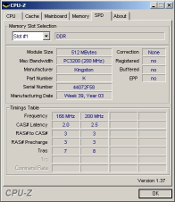

Most motherboards that are designed for overclocking generally have the related options (see previous section) set at some kinda of default automatic mode, that sets parameters to safe values based on the hardware (CPU, memory) used.
Therefore, since we will be turning off these automatic defaults, we should establish a baseline, for a non-overclocked system. A baseline is setup properly for your exact CPU and memory's specifications. First, we must use the proper voltage for your CPU. This varies, but for the 4000+ its 1.35 volts. Therefore, the Hammer Vid Control should be set to 1.25, so the Vcore offset can then bring it up to 1.35. The multiplier can then be set to the CPU's internal one, in the case of the 4000, that is 12x.
 The baseclock should be kept at 200, until we start to raise it later.
Depending on whether or not your running DDR333, or hopefully DDR400, you should set the RAM clock speed to either 166 or 200 Mhz, and memory timings should be set to what your SPD (serial precense detect) has in its memory. The SPD is information stored within your RAM DIMM, that contains it's recommended settings for memory timings based on the differant clock speeds. If your are unfamiliar with what your RAM timings should default too, or you can't find the spec sheet, run CPU-Z in Windows, while your BIOS is still set to overclock mode. CPU-Z will list just about all the information you'll need to help you overclock.
One of the most important -- and easy -- things to do, is to lock the PCI, and PCI-Express buses, at 33 Mhz, and 100 Mhz respectivily. Not only is this very important for setting a baseline, chances are you won't be overclocking your devices via raising the frequcny of the PCI bus, so it makes sense to keep this locked down to avoid any hard to diagnose problems.
Configuring a Manual Baseline